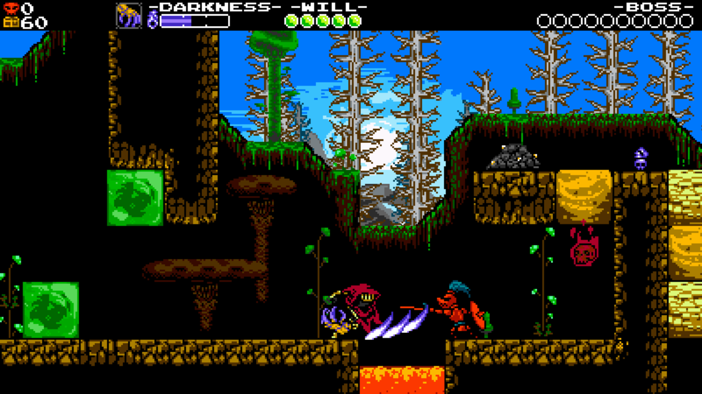

BOMBERMAN R
Some comparisons can cut both ways. Super Bomberman R, an unlikely revival for Hudson Soft's classic series as it celebrates its 33rd anniversary, feels like the product of another age. In its power pop colour and with its kernel of proven multiplayer brilliance, it's every inch a forgotten Dreamcast classic that's been freshly unearthed. With its blunt simplicity, though, it can be left a little exposed in these less forgiving times.
There's a weight that's been placed on Super Bomberman R, one that it's not always able to shoulder. First, its profile has been raised by one of the few physical retail games accompanying the launch of Nintendo's Switch (with a sizable price-tag to boot, something at odds with more recent Bombermans, such as DSiWare's Blitz or Xbox 360's Live: Battlefest). Secondly, it's the first game to showcase Nintendo Switch's online offering. And in that regard, it's not pretty at all.

Whether blame lies with developer Konami (who bought out Bomberman's creators Hudson Soft in 2012) or with Nintendo's own service or hardware isn't exactly clear, but playing Super Bomberman R online can be horrendous. Even when you've fiddled in the settings to make sure you're only playing against people with decent connections there's a sluggishness that often devolves into a stuttering mess. It's early days, of course, but there's a real danger that most players will have moved on by the time Super Bomberman R gets its act together. Needless to say, if you're out for a replacement for the sturdy and enjoyable Bomberman Live: Battlefest, you're best off looking elsewhere, and here's hoping Nintendo's own online debut with Switch in Mario Kart 8 Deluxe is on firmer footing when it comes out towards the end of April.
There's plenty else to find fault with, whether that's with its price tag, it's online or how slim it all feels. Or, for that matter, how Unity doesn't seem capable of providing the gloss in what's a technically limited showcase for the Switch. For all that, I've got a huge soft spot for Super Bomberman R; it's a gentle throwback to simpler times, and a welcome revival for a local multiplayer classic for what's set to be an outstanding local multiplayer machine. An effective slice of nostalgia, then, albeit one that comes at a considerable price.
Other Reviews
THE LEGEND OF ZELDA: BREATH OF THE WILD

SNIPPERCLIPS

1-2-SWITCH

SHOVEL KNIGHT: SPECTRE OF TORMENT
